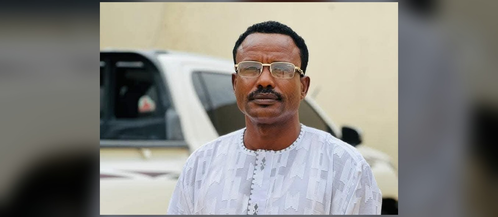

من هو
فنان شعبي حمل في صوته تراث البادية بغرب السودان، ونقل من خلال أغانيه تفاصيل حياة الرُّحّل وأهل البدو وأهل الناقة والبقرة؛ الرحلة، الناقة، الفرقان، والشوق. صوته صار من أكثر الأصوات ارتباطاً بهذا اللون الغنائي في السنوات الأخيرة.

صوت الرحّل وأغاني أهل البادية
فنان شعبي حمل في صوته تراث البادية بغرب السودان، ونقل من خلال أغانيه تفاصيل حياة الرُّحّل وأهل البدو وأهل الناقة والبقرة؛ الرحلة، الناقة، الفرقان، والشوق. صوته صار من أكثر الأصوات ارتباطاً بهذا اللون الغنائي في السنوات الأخيرة.
برز الفنان قبل نحو عقدين من الزمن كفنان شعبي في مدينة الجنينة بغرب السودان، قبل أن ينتشر صوته وأعماله داخل السودان وفي الدول المجاورة، حاملاً معه إيقاعات وألحان أهل البادية.
وثّقت أعماله أنماطاً من الغناء والإيقاع المرتبط بتراث غرب السودان (منها ما يُعرف محلياً بالإيقاع الجنيدي)، وأسهمت في حفظ هذا الموروث الشفهي ونقله لجيل جديد لم يعاصر حياة البادية القديمة عن قرب.
بحسب ما تناقلته مصادر إعلامية محلية، تُوفي الفنان إبراهيم إدريس في ديسمبر ٢٠٢٥ إثر غارة جوية طالت منطقة هجليج بولاية غرب كردفان، تاركاً إرثاً فنياً من أغاني التراث يستحق الحفظ والتوثيق. هذا الموقع محاولة متواضعة لأرشفة هذا الإرث وإتاحته للأجيال القادمة.
وبحسب ما تناقلته مصادر إعلامية، لم يكتفِ الفنان إبراهيم إدريس بنقل معاناة أهل البادية وتهميشهم من قبل الحكومات المتعاقبة عبر صوته فقط، بل شارك مدافعاً عن مجتمعه في حرب 15 أبريل 2023 بصوته وجسده ودمه وروحه، واستُشهد وهو يدافع عن أهله ومجتمعه.
مجموعة من أغاني الفنان، محفوظة ومتاحة للاستماع مباشرة من الموقع.